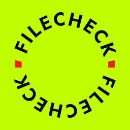
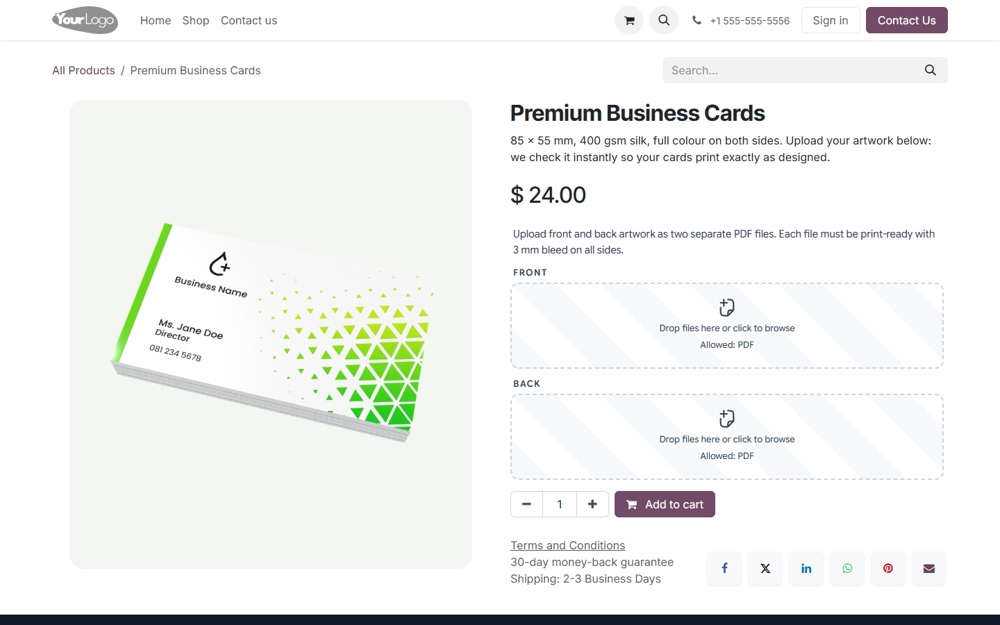
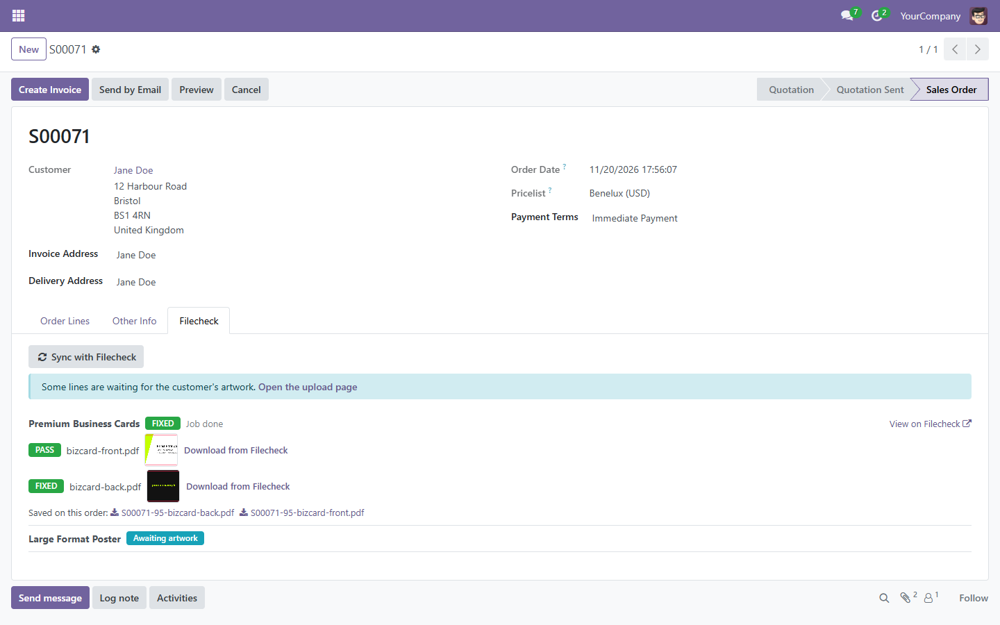
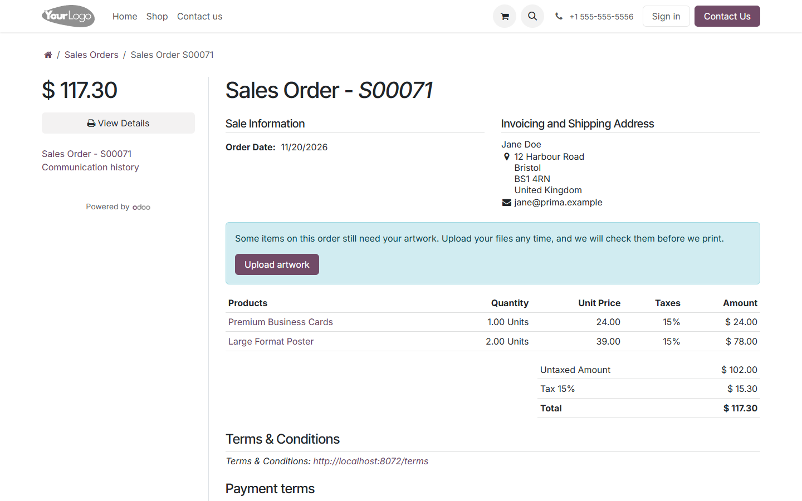
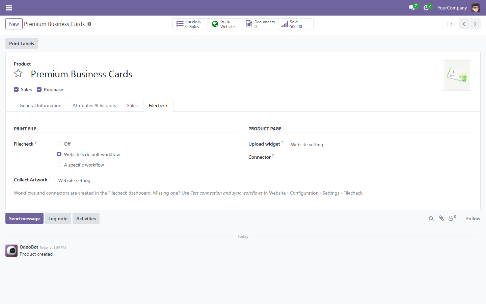
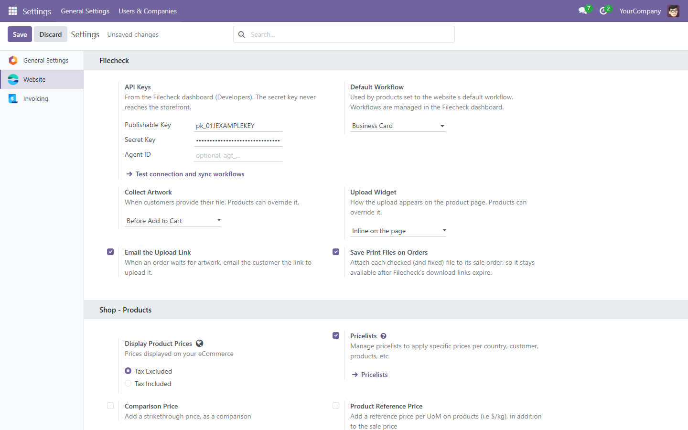

Filecheck Print File Preflight
Customers upload print-ready files before they check out.
Filecheck (filecheck.io) checks the artwork your
customers upload: size and bleed, resolution, colour space, fonts, page count and
more, each product with its own rules. It fixes what it can on its own (adds bleed,
converts RGB to CMYK, resizes near-miss files) and shows the customer a proof. This
module puts it on your Odoo product pages, so every order arrives with files you
can print, and the files land on the sale order.
What you get
- Upload and preflight on the product page: the Filecheck upload box
sits above Add to Cart, which unlocks once the files pass (or were fixed).
- One file per cart line: the checked file follows its line onto the
sale order, and its name shows in the line description.
- Print files saved on the order: each checked (and fixed) file is
attached to the sale order, with a note in the chatter.
- Filecheck tab on orders: outcome per file, proofs, download links,
and a link to the job in your Filecheck dashboard.
- Artwork after checkout: sell products first and collect the file
later. The customer gets an upload link by email, on the order confirmation page
and in their portal; files uploaded there land on the order lines.
- Never blocks a sale: if the check cannot run, the customer still
orders and receives the upload link, so no line ships without a file.
- Per-product setup: a Filecheck tab on each product picks its
workflow, when the file is collected, the widget style and an optional connector
that fills quantity or size from the file.
- Multi-website ready: keys and defaults are set per website.
Screenshots
The upload box on a product page

Files, proofs and outcomes on the sale order

Artwork after checkout: the upload link in the customer portal

Per-product settings

Website settings

Setup in three steps
- Create an account at filecheck.io, set up a workflow for your
product (or pick a ready-made one), and copy your publishable and secret keys.
- Paste them under Website > Configuration > Settings > Filecheck,
click Test connection and sync workflows and choose a default workflow.
- Open a product, go to the Filecheck tab and switch it on. Done.
Good to know
- Works on Odoo 17 and 18, self-hosted and Odoo.sh. (Third-party
modules cannot be installed on Odoo Online.)
- The module is a thin connector. Checking, fixing and proofs run on Filecheck's
servers; the secret key stays on your server and never reaches the storefront.
- A Filecheck account is required; see filecheck.io for plans.
- Also uses Print.App? Lines designed in the Print.App module are listed on the same
Filecheck order page.
Website: https://filecheck.io ·
Questions? support@filecheck.io
Source: https://github.com/PrintApp/filecheck-odoo